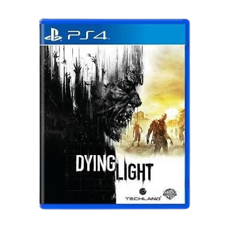
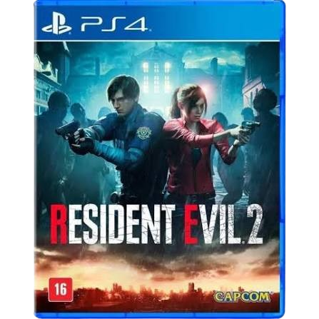
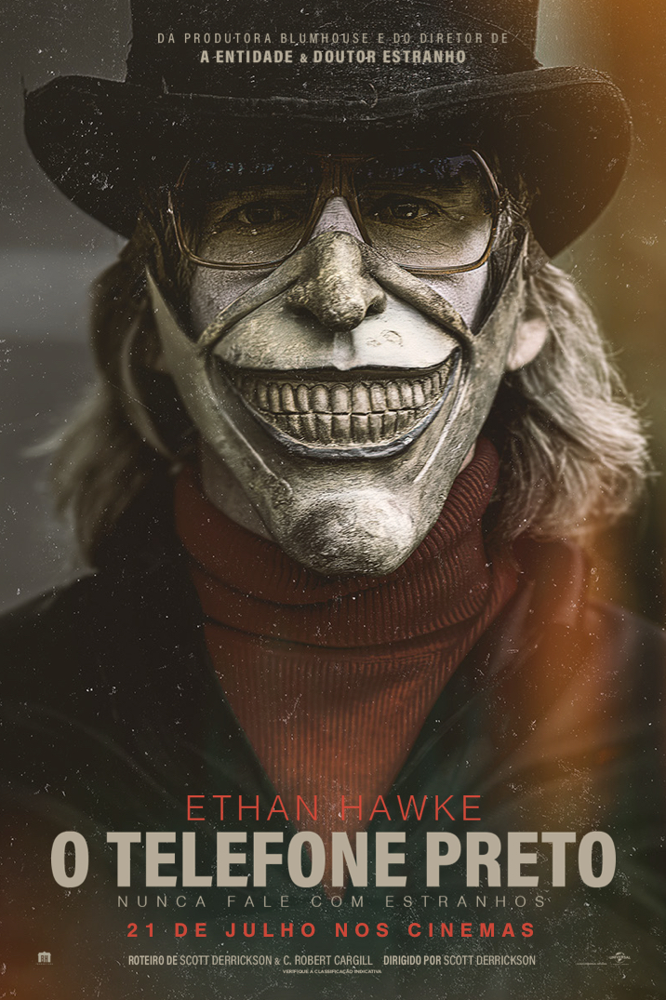

Minha página de terror
Aluno: Pedro
Tipo de mídia: Filmes e Jogos de terror
Escolhi dois filmes e dois jogos que misturam suspense, mistério e momentos assustadores.
Dying Light

Tipo: Jogo de terror e sobrevivência
Sobre o jogo
Dying Light é um jogo de sobrevivência em um mundo tomado por infectados. O jogador explora a cidade de Harran, procura recursos e precisa enfrentar perigos enquanto tenta sobreviver. O jogo também se destaca pelo sistema de movimentação e parkour.
Por que escolhi?
Escolhi esse jogo porque gosto da mistura de terror, ação e exploração. Acho interessante a necessidade de procurar recursos e sobreviver em uma cidade perigosa.
Resident Evil 2

Tipo: Jogo de terror e sobrevivência
Sobre o jogo
Resident Evil 2 acompanha Leon S. Kennedy e Claire Redfield durante um surto que transforma pessoas em zumbis na cidade de Raccoon City. Os protagonistas precisam explorar locais perigosos, resolver enigmas e encontrar uma maneira de sobreviver.
Por que escolhi?
Escolhi esse jogo porque gosto dos mistérios, dos enigmas e da atmosfera de suspense. Também acho interessante como o jogo combina exploração e sobrevivência.
IT: A Coisa

Gênero: Terror sobrenatural
Sobre o filme
A história acompanha um grupo de amigos que vive na cidade de Derry e precisa enfrentar uma criatura assustadora que aparece principalmente na forma do palhaço Pennywise. Juntos, eles tentam descobrir os mistérios por trás dos acontecimentos da cidade.
Por que escolhi?
Escolhi esse filme porque gosto do suspense, dos mistérios e da história do Pennywise. Também acho interessante a união dos amigos para enfrentar seus medos.
O Telefone Preto

Gênero: Terror e suspense
Sobre o filme
A história acompanha Finney, um garoto que é sequestrado por um homem misterioso e fica preso em um porão. Lá, um telefone desconectado começa a tocar, permitindo que ele ouça vozes que podem ajudá-lo a encontrar uma maneira de escapar.
Por que escolhi?
Escolhi esse filme porque ele tem uma história misteriosa e cheia de suspense. O telefone é uma parte interessante da trama, pois ajuda o personagem a tentar descobrir como sair daquela situação.